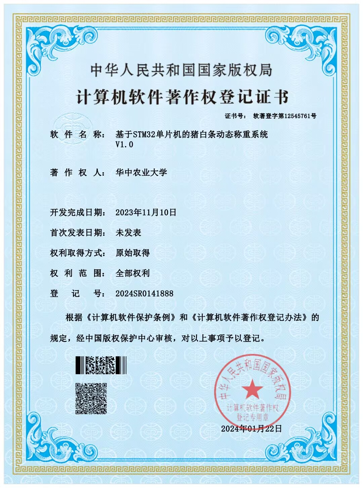

Earlier mechatronics project
Dynamic Livestock Weighing System
A sensor-based mechatronic weighing project using STM32 firmware, HX711 pressure-sensor acquisition and Bluetooth/serial data communication. The project received Computer Software Copyright Registration No. 2024SR0141888.
Portfolio status: This is archived earlier work. I keep it secondary to the current case studies and include it for the embedded firmware, sensor-acquisition workflow and software-registration evidence it adds to my background.
Software Copyright Registration Evidence

What I Did
- Developed embedded firmware in C for an STM32-based weighing system.
- Integrated HX711 ADC pressure-sensor acquisition for real-time weight data capture.
- Supported dynamic weighing algorithm development to improve signal stability under field-like conditions.
- Implemented serial and Bluetooth data transmission to an upper computer for logging and monitoring.